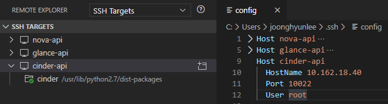
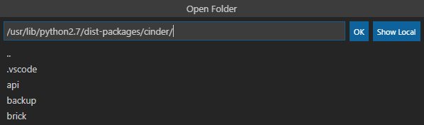
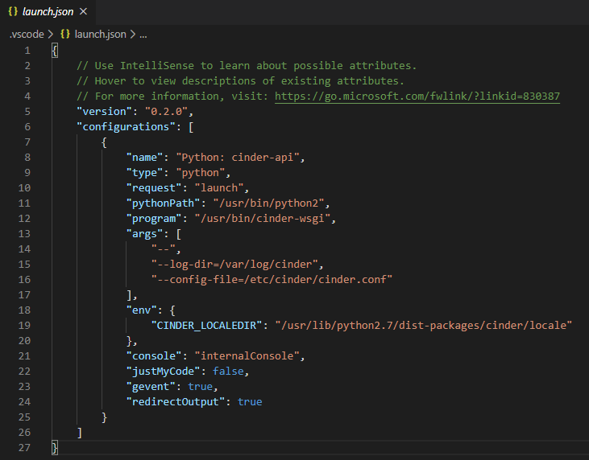
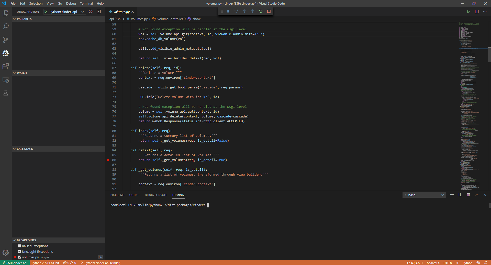
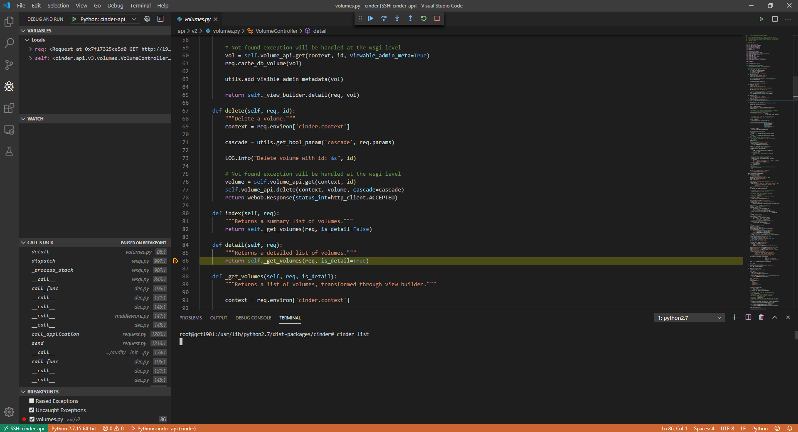

이 문서에서는 Cinder 원격 디버깅에 대해서 다룬다. 본격적으로 들어가기 앞서 아래 문서를 읽고 기본 구성을 갖추도록 하자.
Remote Debugging for OpenStack: nova-api
Cinder 설정 수정
Cinder API 역시 단일 프로세스로 서비스를 구동할 수 있다. 우선 Cinder 서비스를 멈춰두자. Queens의 cinder-api가 Apache httpd에 연동해서 서비스하므로 Apache httpd 서비스를 내린다.
systemctl stop apache2.service
다음으로 단일 프로세스 모드로 구동하기 위해 설정(/etc/cinder/cinder.conf)을 아래와 같이 수정하자.
[DEFAULT]
osapi_volume_workers = 1
Visual Studio Code 설정
Remote Explorer에 cinder-api가 구동되는 서버를 등록한다.

원격지 서버에 접속한 후 Cinder 소스 코드 위치를 찾아서 연다. 아래 그림의 경우 Ubuntu 서버이기 때문에 /usr/lib/python2.7/dist-packages/cinder에 있다.

다음으로 디버깅 프로파일을 추가하자. 단일 프로세스 모드로 구동하기 때문에 launch 타입의 프로파일을 구성할 것이다. 사이드 바에서 Debug and Run 탭(Ctrl + Shift + D)으로 이동하여 다음과 같이 프로파일을 추가하자.

{
"version": "0.2.0",
"configurations": [
{
"name": "Python: cinder-api",
"type": "python",
"request": "launch",
"pythonPath": "/usr/bin/python2",
"program": "/usr/bin/cinder-wsgi",
"args": [
"--port=8776"
"--",
"--log-dir=/var/log/cinder",
"--config-file=/etc/cinder/cinder.conf"
],
"env": {
"CINDER_LOCALEDIR": "/usr/lib/python2.7/dist-packages/cinder/locale"
},
"console": "internalConsole",
"justMyCode": false,
"gevent": true,
"redirectOutput": true
}
]
}
cinder-api 서비스는 위와 같이 구성한다. env 필드는 locale 설정을 위한 환경 변수를 정의하기 위해 추가해주었다.
cinder-api 디버깅
설정한 디버깅 프로파일을 실행하면 cinder-api가 실행되고 디버깅 모드로 진입한다. 관찰할 코드에 브레이크 포인트를 설정하고 프로파일을 실행해 보자. 여기서는 볼륨 목록 조회하는 API에 브레이크 포인트를 걸어보았다.

TERMINAL 패널을 열어 Cinder CLI를 통해 이미지 조회를 해보자. 그럼 아래과 같이 브레이크 포인트가 있는 지점에 멈추고 디버깅을 진행할 수 있다.
